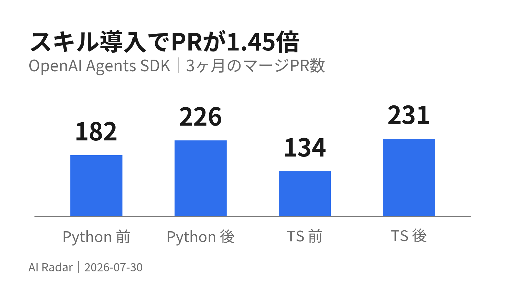

スキル導入でPRが1.45倍

OpenAI が自社の Agents SDK リポジトリに repo-local skills と AGENTS.md を入れ、3ヶ月のマージPR数を 316 → 457（約1.45倍） に伸ばした。
効いているのは賢いモデルではなく、「いつそのスキルを呼ぶか」をリポジトリ側に書き切ったこと。ルーティングは description が決めている。
01数字：3ヶ月で 316 → 457 PR
OpenAI Agents SDK の Python / TypeScript 2リポジトリでの実測。
| 期間 | Python | TypeScript | 合計 |
|---|---|---|---|
| 2025-09-01 〜 11-30 | 182 | 134 | 316 |
| 2025-12-01 〜 2026-02-28 | 226 | 231 | 457 |
TypeScript側が 134 → 231 とほぼ倍増している。規模の裏付けとして、2026-03-06 時点の直近30日でPythonパッケージは PyPI で約1,470万DL、TypeScript は npm で約150万DL。
構成は驚くほど単純で、4つだけ。
- リポジトリのポリシーを
AGENTS.mdに書く - repo-local スキルを
.agents/skills/に置く - スキル内に任意で
scripts/とreferences/ - 同じ手順をCIでも回すなら Codex GitHub Action
「AIを入れたら速くなった」ではなく「AIに渡す手順書を整備したら速くなった」という話。前号の SKILL.md と完全に同じ構造で、これで3社目。手順の文書化は、もう特定製品の話ではない。
出典: Using skills to accelerate OSS maintenance（OpenAI, 2026-03-09）
02AGENTS.md に「if / then」で強制ルールを書く
スキルは置いただけでは使われない。リポジトリが正しいタイミングで要求して初めて効く。 そこを担うのが AGENTS.md。
実際に使われている形は短い条件文の羅列。
## Mandatory skill usage
- ランタイムやAPIの変更前に $implementation-strategy で
互換性の境界と実装方針を決める
- ランタイムコード・テスト・examples・ビルド挙動が変わったら
$code-change-verification を実行
- OpenAI API / プラットフォーム関連の作業では $openai-knowledge
- まとまった作業が完了しレビュー可能になったら $pr-draft-summary重要なのは $code-change-verification のルールの立て方。「常に長い検証を回せ」ではなく、「ランタイムコード・テスト・examples・ビルド挙動が変わったときに回し、通るまで完了扱いにしない」。条件付きなのでドキュメントだけの変更は軽いまま、SDKの変更は必ず標準手順を通る。
AGENTS.md にはスキルのトリガーだけでなく、公開APIの互換性ルール（コンストラクタ引数の位置の意味を保つ、新しい任意引数は末尾に足す）も一緒に書かれている。リリースを壊しうるルールと、スキルのトリガーを同じ場所に置くという考え方。
config.md に近いことを既にやっているが、「いつ呼ぶか」を条件文で書くという発想は入っていない。「〜のときは必ず〜する」の形にすると強制力が変わる。
出典: Using skills to accelerate OSS maintenance / AGENTS.md ガイド
03description はルーティング契約であって、飾りではない
Agent Skills 仕様では SKILL.md frontmatter の必須項目は name と description の2つ。起動時に全スキルについて読み込まれるのはこの2つだけで、本体や scripts/ references/ は選択後に初めて読まれる（progressive disclosure）。
つまり description が実質的なルーティング信号になる。記事の実例が分かりやすい。
悪い例：
description: Run the mandatory verification stack in the OpenAI Agents JS monorepo.実際に使われている記述：
description: Run the mandatory verification stack when changes affect
runtime code, tests, or build/test behavior in the OpenAI Agents JS monorepo.前者は「何をするか」しか言っていない。後者はいつ適用されるか／何が引き金か／必須かどうかの3つを伝えている。
ルーティングが不安定なら、コードを足す前にメタデータを直せ。
スキルを書くとき本文を作り込みがちだが、先に description を詰めるほうが効く。「いつ」「何が引き金で」「任意か必須か」の3点を1文に入れる。
出典: Using skills to accelerate OSS maintenance / Agent Skills specification
04モデルとスクリプトの分担線
どこまでをモデルにやらせ、どこからをスクリプトに落とすか。記事の切り分けは明快。
- モデル — 解釈・比較・報告。ソースを読んで意図を推測する、ログと意図を突き合わせる、リリース差分に実際の互換性リスクがあるか判断する
- スクリプト — 決まった順序のシェル作業。検証コマンドを固定順で回す、ログを集める、前回のリリースタグを取得する
判断基準が実務的で、「モデルが毎回同じシェルの手順を再発見しているなら、それはスクリプトにすべきサイン」。逆に文脈・トレードオフ・説明が絡むならモデル側に残す。
スクリプトは小さなCLIとして設計する（決定的なstdoutを出す、失敗時は明確に落ちる、出力は既知のパスに書く）。
今日まさに同じ判断をした。RSS取得スクリプトは実行環境の制約で使えず、判断部分（何が業務転用に値するか）はスクリプトに書けない。「決定的な作業だけスクリプトに落とす」線引きは、この記事の通りだった。
出典: Using skills to accelerate OSS maintenance
05examples の検証を「終了コード」で済ませない
面白かったのが自動統合テストの設計。スクリプトは examples を実行して stdout / stderr を個別ログに保存するだけ。判定はモデルがやる。
手順は、examples のソースとコメントを読む → 意図した流れを推測する → 対応するログを開く → 意図と実際の出力を突き合わせる。これを成功した例も含めて全件やる。
理由は明快で、実APIを叩いたりツールを使ったり構造化出力を返す例では、終了コードが0でも正しいとは限らないから。固定のアサーションを書くより、出力を記録してからソースと突き合わせるほうが正確で柔軟だという判断。
JS側にはもう一層あり、Verdaccio のローカルレジストリに publish して Node.js / Bun / Deno / Cloudflare Workers / Vite React で install して動くかまで確認している。
「機械が実行して証拠を残し、モデルが証拠を評価する」という2段構え。テストに限らず、チェック業務全般に効く型。目視確認でやっている作業があれば、証拠を残す部分だけ自動化してAIに突き合わせさせられる。
出典: Using skills to accelerate OSS maintenance
Anthropic の evals / context engineering / managed agents 系の記事群は今回も未読。エージェント設計の話が3社で揃ってきたので、次はここを読んで横断で整理したい。
この号は日次運用の取りこぼしを埋めるために後から作成。元記事の公開は 2026-03-09。